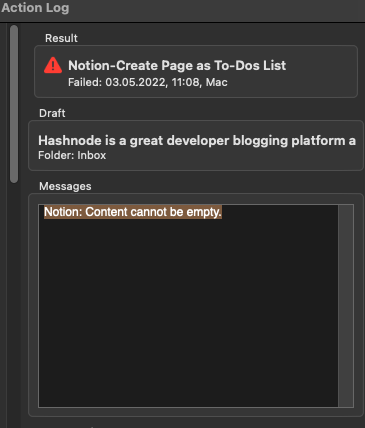

I’ve downloaded the example actions but they’re not working. I’ve authenticated everything and shared it with Drafts from Notion but I keep getting error when running an action.

What error details are showing in the action log?
The first one showed “Service login required” which I guess was because I haven’t logged in yet. Following that were a few that showed “Notion: Parent required” and the last few showed “Notion: Content cannot be empty”.
Is this all on a single run, or on multiple runs? Really what you want is the exact log entries of the most recent single run. You should just be able to copy and paste the content of the messages section directly into the forum post.
E.g. Here is a recent error from my log.
Script step completed.
Script step completed.
Script Error: ReferenceError: Can't find variable: strRegExSearch
Line number: 34, Column 21
Oh yeah, here’s the error message from the latest run.
Notion: Content cannot be empty.
Screeshot:

This message is pretty clear…what is the content of the draft you are trying to run this action on? Per the description, this action takes the first line of the draft as a title, and the remaining lines as to-dos. Do you have multiple lines in your draft? It sounds like it’s trying to create a blank page in Notion, which is not valid.
1 Like
As you can see from here the drafts page I’m trying to add to Notion is not empty. The Notion page I’m trying to append to as well is not empty page, there’s a lot of text in it. I’ve also tried appending to other pages as well but it’s still not working.
From the screenshot it looks like all of your text might be on the first line, the title - which would mean there is no content beyond the title, which as Greg noted above is what is used for the content sent to Notion.
What do you get with a draft like this? The same error, or does it then work, with lines 2-4 being used as the content?
I am the title line
I am the first content line
...
I am the last content line
Many thanks for creating this integration!
Oh, I get it, it’s working now. Seems like because there was no line break it was taking the whole paragraph as a single line. Thanks for the clarification.